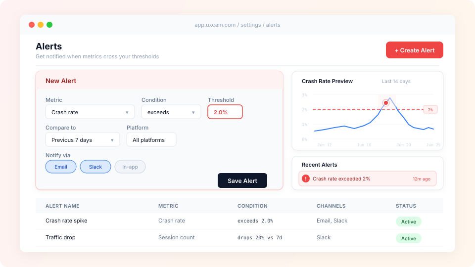

Alert system
Designing a notification and threshold-based alert system for proactive monitoring.

Overview
UXCam's analytics platform collects continuous data about user behavior, but teams couldn't act on it proactively — they had to manually check dashboards to spot issues. The alert system brings critical changes to users' attention automatically, turning reactive monitoring into proactive awareness.
Problem
Without alerts, teams were missing critical signals:
- Crash rate spikes went unnoticed until someone happened to check
- Funnel drop-off increases weren't caught early enough to act on
- Teams lacked a way to set thresholds for metrics they cared about
- No notification infrastructure existed — everything was pull-based
Process
I started by interviewing power users about what they wished they could be notified about and when. This revealed a spectrum from simple threshold alerts ("notify me when crash rate exceeds 2%") to complex conditional alerts ("notify me when session count drops 20% compared to last week, on iOS only").
The design challenge was creating a system flexible enough for power users without overwhelming teams who just wanted basic monitoring.
Solution
The alert system uses a layered approach: preset templates for common alerts (crash spikes, traffic drops) and a custom builder for advanced configurations. Each alert includes metric selection, condition logic, threshold values, comparison windows, and delivery channels (email, Slack, in-app). A preview mode shows historical data to help users set meaningful thresholds.
Outcome
The alert system shifted teams from reactive to proactive monitoring. Usage data showed that teams with active alerts responded to issues faster, and the preset templates made adoption easy even for teams new to monitoring.